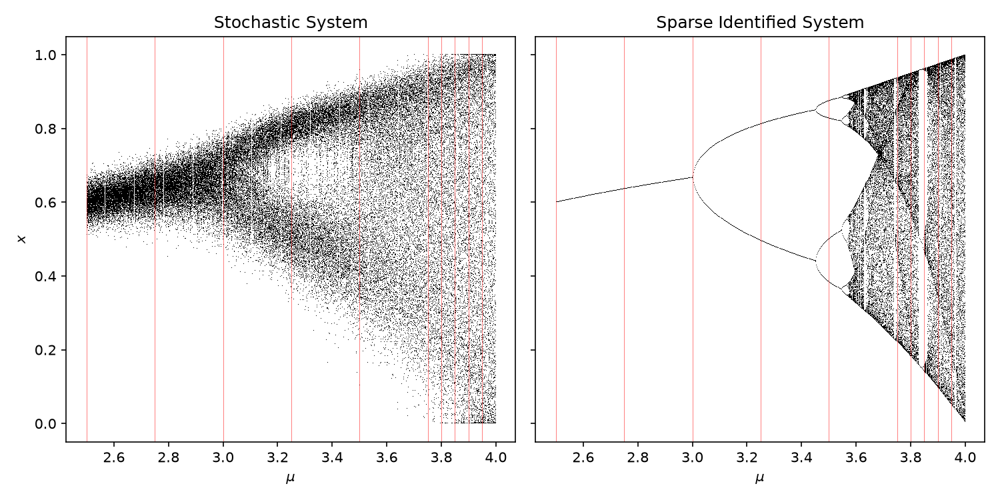

Sometimes it is done. Sometimes the sentence is all there is.
Anyone who runs agents on real work learns this early. The model writes plausible code, runs some of it, and reports completion in fluent, confident prose. Sometimes it is done. Sometimes the figure was never generated, the comparison never ran, and the sentence is load-bearing for nothing. The failure is not dishonesty; it is that in most workflows the agent's claim is the only artifact of completion there is.
I have written before about what an agent-first workflow preserves: the reasoning chain, the dead ends, the corrected beliefs, all of it landing as reviewable artifacts. That note ended on trust: you do not trust the agent, you trust the substrate it stands on. This note is about the sharpest instrument that substrate can carry: a gate that decides, from files on disk, whether the work is actually finished, and that the agent cannot talk its way past.
Every claim becomes a target. Done becomes a workspace state, not a sentence.
On 2 July, Atharva Hans and Ilias Bilionis of Purdue posted "Coding-agents can replicate scientific machine learning papers". The task they picked is a hard, honest one: hand an agent a scientific paper's LaTeX source and ask it to reproduce the paper's computational claims from the text alone, no author code. But the contribution that matters beyond scientific ML is the workflow they wrapped around the agent.
Every computational claim in the source paper becomes a recorded row in a reproduction matrix: where the claim lives, what would count as reproducing it, an acceptance rule with a tolerance, a status. A wrapper tracks every execution into a run ledger. A target can only reach MATCHED when a chain of evidence exists on disk: the generated artifact, the run that produced it, provenance pinning the code, configuration and seed by hash, a recorded comparison under the acceptance rule, and the artifact embedded in a compiled report. Paper-provided assets are hash-indexed as reference-only, so an agent that copies the paper's own figure into its results is caught mechanically. And the finish line is not a message: four external validator scripts check the workspace, and the run is complete only when every target is MATCHED, no target is active, and the report PDF exists. The authors' phrase for it is exact: completion is a workspace state rather than a statement in the agent's final message.
Their evaluation: twelve independent runs across four scientific ML papers, driven by one agent family at a high reasoning setting. All twelve workspaces passed the gate; 158 recorded targets matched with report coverage. What varied, and the paper is candid about this, was judgment: how finely runs decomposed the same paper into targets, and which acceptance rules they chose.
The agent cannot declare completion. It can only produce a workspace that passes.
Targets, evidence bundles, hash-pinned provenance, external validators. The verdict comes from scripts reading files, not from the model's summary of itself.
A different agent, the authors' harness, unmodified.
A workflow paper evaluated only by its own authors, with one agent family, leaves the transfer question open. The authors released everything: the harness, the validators, the prompts, and agent-facing instructions in two dialects, one of which happens to target the agent stack I run. So the replication design chose itself. Take the released harness at its pinned commit, change nothing, and drive it with a different agent family than the one in the paper's evaluation, on one of the paper's own four case studies. For the record, the paper appeared on 2 July and this run happened the following day; the timing matters for exactly one reason, which is that the authors had no opportunity to assist, so whatever the harness did, it did on its own.
The subject paper was SINDy, the 2016 sparse-regression method for discovering governing equations from data, the least expensive of their four. The driver was Claude, through the Claude Code dialect of the authors' released instructions; their evaluation ran Codex, so the two agent families meet only at the harness. My run planned eleven targets covering the paper's core low-dimensional claims: the damped oscillators, the chaotic Lorenz system, the logistic map's bifurcation cascade, the Hopf normal form. Every tolerance was pre-registered in config files before the first fit ran, anchored to the numbers printed in the source paper's own tables. The method was rebuilt from the paper's text alone, under the harness's default policy that forbids author code. And the design has a real failure branch: a target that cannot be reproduced simply stays unmatched, its refused attempts on the ledger, and the gate never passes. Non-reproduction would have been a recorded state, not a silent absence; that is the property being tested.
The result: all eleven targets reached MATCHED, all four validators returned green, and the compiled report passed the completion gate. The recovered dynamics sit close to the printed tables: the Lorenz coefficients within 0.002 of the paper's values against a pre-registered tolerance of 0.15, the logistic map within 0.0006, and the Hopf normal form within 0.9 percent of ground truth, where the source paper reports its own coefficients off by almost 8 percent.
{kind=link}

One evening, one laptop, no cluster. The authors' SINDy runs took between 1.2 and 2.7 hours of wall clock each with 20 targets; mine planned fewer targets and spent its time differently, most of it in the loop this note is actually about.
The gate refused my agent four times. It was right every time.
The most informative part of a replication is not the green light at the end; it is what the machinery does when the work is wrong. Mine was wrong four times, on three targets.
The first refusal. On the three-dimensional linear system, my agent's fit produced spurious terms, and the comparison gate refused to record a match. Two causes surfaced under the refusal. My polynomial library was one order too rich, aliasing exponential decay rates against each other, a degeneracy the source paper itself warns about in a sentence that is easy to skim past. And the source paper's displayed equation and its own appendix table disagree on a sign convention, a small, decade-old discrepancy of the kind target-anchored comparison surfaces mechanically. The authors' released runs hit the analogous ambiguity in another example and resolved it the same way mine did, toward the table. Two strangers' agents, independently converging on the same reading of a typo, is a small preview of what replication at scale looks like.
The second and third refusals were both the logistic map, and together they are the best argument for the loop. The first fit came back dense, spurious terms everywhere, because I had starved the regression: one initial condition per parameter value leaves the polynomial library nearly collinear, and the fit soaks noise into phantom terms. I fixed the sampling; the gate refused again, because recovery was still fragile across seeds. The real cause took an isolation experiment to find: my data generator was clipping the stochastic map's state into its domain and recording the clipped value as the regression target, which biased the residual exactly at the domain edges. Regress on the raw forced value instead, and recovery is exact-support across every seed tested. Two refusals, two distinct causes, and the sparse regression was never the problem; my measurement pipeline was, twice.
The fourth refusal. The Hopf normal form, fit from noisy states through a total-variation-regularized derivative, came back dense too. An isolation test with exact derivatives recovered the true support perfectly, which located the fault in one regularization constant: over-smoothed derivatives, biased just enough to scatter energy across the library. One parameter change, verified across seeds, and the fit landed inside one percent of truth.
Here is the sentence that matters: under an ordinary agent workflow, all four of those errors ship. Each produced a plausible artifact, a figure that looked right at arm's length, and an agent ready to summarize success. What stopped them was not my vigilance and not the model's conscience; it was a script comparing files against a rule I had been forced to write down before running anything. Which is to say: every refusal is the authors' architecture doing exactly what it promises, against an agent and an operator it had never met.
Fix one file, and seven finished targets reopen.
Midway through, the second refusal's fix touched a shared implementation file. The next validator pass failed seven targets that had already been matched: their provenance records pinned the hash of the code that produced them, the file had changed, and the harness considered their evidence stale. The only way forward was to re-run and re-register every one of them against the settled code.
My first reaction was that this was the harness being bureaucratic. My second was that it goes a long way toward explaining the authors' own numbers: their released SINDy workspaces record between 20 and 34 executions per 20-target run, and at least part of that surplus is this, superseded evidence kept honest. If evidence claims to descend from code, and the code changes, the evidence is no longer evidence. Most human research workflows never enforce this. This one does, mechanically, and the cost is real and worth paying. The final eleven of eleven is the workspace state after that re-registration, not before it.
Two limits, and I am the demonstration of the first.
To be precise about attribution: the paper itself names both of these in principle. Completion, the authors write, "remains relative to the target set recorded in the reproduction matrix", and hash checks "do not detect every transformed copy". What an independent run adds is their empirical shape, how they behave under a stranger's hands, and a mechanical fix for each.
Coverage is planner-relative. The completion gate binds status to evidence: every planned target must earn its match. It says nothing about whether the plan covers the paper. The agent writes its own target list, and a scoped plan passes the same gate a comprehensive plan passes. I know because I did it: my eleven targets deliberately excluded the source paper's fluid-dynamics example, which needs simulation data I had no business generating on a laptop, and the gate was equally green. The exclusion is recorded and argued in the workspace, but no validator demanded that. The authors' own data shows the same freedom operating less deliberately: the same source paper decomposed into 8 targets in one of their runs and 25 in another. The gate guarantees the work claimed was done; it cannot guarantee the work needed was claimed. The fix is knowable, a coverage validator comparing the planned matrix against the paper's own figure and table inventory, with exclusions required in writing.
Provenance is declaration-deep. Each target's evidence pins the hash of the code file the agent declares as its implementation. It does not pin the file's imports. When my shared-module edit invalidated seven targets, that was the net working. But a later edit to a sibling module, the one holding the actual numerical method, invalidated nothing, because no target had declared it. The anti-tamper net has holes exactly where the agent chooses not to declare, which is exactly where an adversarial or lazy agent would put things. The fix is equally knowable: pin the transitive import closure, or hash the whole source tree.
And beneath both sits the variance the authors report frankly: across their repeated runs, the share of claims receiving the same acceptance-rule type ranged from one half on the hardest paper to 95 percent on the cleanest, computed from their released analysis data. Target decomposition, acceptance rules, and tolerances are the three levers a sloppy run could use to pass its own gate. Pre-registering tolerances before the first run, as this replication did, closes part of that; an independent review of the plan before it locks would close more.
The gate proves the claimed work was done. It cannot prove the needed work was claimed, or that undeclared code stayed honest.
Both limits are acknowledged by the authors in principle; both have mechanical fixes: a coverage validator against the paper's own asset inventory, and provenance over the import closure instead of one declared file. Neither weakens the design; both complete it.
What is science here, and what you can use on Monday.
Nothing in the workflow's core knows it is about physics. A claim becomes a recorded target with an acceptance rule written down in advance. Work becomes tracked executions. Evidence becomes hash-pinned provenance. Done becomes a workspace state that external validators check. And because an agent family the harness had never met conformed to a gate designed around a different one, the contract is evidently about the workspace, not the actor. That is a general contract for agent-delivered work, and scientific replication is simply the domain where pretending is hardest, because the source paper's printed tables are the acceptance rule, sitting in public, decades old, indifferent to fluent prose.
Why a practitioner replicates a methods paper at all.
Three open questions live here, and they are research questions, not product ones. Does a completion gate transfer across agent families, or was it tuned to one? (This run: one data point that it transfers.) How much does agent judgment vary when agents write their own acceptance rules? (The authors' own data: agreement from one half to 95 percent, the honest weak edge of the field.) And what should provenance actually pin, declared files or execution lineage? These same questions apply to the whole replication-benchmark class, PaperBench included. None of this needs to interest you for the next box to be useful.
Five things to copy, none of which require the science.
One: every agent task gets a written acceptance rule before the run, the same discipline your contracts and SLAs already encode for human work; if nobody can write the rule, the task is not ready for an agent. Two: a validator script declares done, never the agent; completion becomes a fact about files. Three: keep refused attempts on a ledger instead of overwriting them; the refusals are your audit trail and your evidence the gate is working. Four: pin evidence to the code and configuration that produced it, so a later change cannot silently orphan earlier results. Five: change the KPI question from "how many tasks did the agents complete" to "how many completions did the gate refuse"; a gate that never refuses is not a gate. And the trust question resolves itself: "can I trust the agent" has no answer, "can I trust the gate" is an engineering question with an inspectable one.
The failure mode all of this displaces has a name in my telemetry: sessions where the agent edited and reported, and no verification action ever ran. Every workflow that lets the agent narrate its own finish line has that hole, and enterprise agent programs have spent three years excited about building agents while leaving it open. Science is simply the oldest culture whose entire product is checked claims; importing its machinery is what turns an impressive demo into something a business can bill against.
What this run established, and what it cannot.
Established by this replication. The released harness runs unmodified outside the authors' hands, on a different agent family, and its completion gate passed on a real case study with no author involvement. The validators refused four genuinely wrong intermediate results that a narrated workflow would have shipped. The provenance net catches shared-code drift and forces re-registration. The recovered dynamics match the 2016 paper's printed tables within pre-registered tolerances, in one case an order of magnitude closer to ground truth than the source paper's own fit.
Not established, and this note does not claim it. One run, one subject paper, the cheapest of the authors' four, with a deliberately scoped target plan. Nothing here measures how the workflow behaves on papers whose claims resist decomposition, or under agents motivated to game the acceptance rules; section vi is exactly where they would press. The two proposed fixes are designs, not results. And a replication whose verdict agrees with the authors' carries less information than one that had to disagree; the disagreements here were all between the gate and me, which is the outcome the design wants but only one run's worth of it.
Stop accepting completion claims from the entity that benefits from making them.
The gate does not need to be this paper's gate. It needs to be external, deterministic, and written before the work: a validator reading files, refusing until the evidence exists. The refusals will be the most valuable output you get.
An independent applied-AI engineering note by Arseny Gorokh. Not an official EPAM publication. The replication was run by the author's own agent stack against the authors' publicly released harness, unmodified, at its pinned commit; the paper and harness belong to their named authors, and the 2016 SINDy paper to its. The evidence bundle linked above carries the final target matrix, the completion-gate output, the assumptions log with all four refused attempts, and the compiled replication report. N = 1: one run, one paper. Treat the transfer claim as demonstrated once, not established.
References
- A. Hans and I. Bilionis, "Coding-agents can replicate scientific machine learning papers", arXiv:2607.02134, submitted 2 July 2026. The workflow, the completion gate, the twelve-run evaluation (158 targets, all matched), and the candid variance reporting.
- The authors' release bundle, PredictiveScienceLab/paper-replication-paper: the agent-facing harness in two dialects, the validators, the prompts, twelve agent-generated case-study workspaces, and the analysis data behind Figure 3. This replication ran the harness at commit
46ad437, unmodified; its own unit suite passed 42 of 42 on the replication machine. - S. L. Brunton, J. L. Proctor, and J. N. Kutz, "Discovering governing equations from data: Sparse identification of nonlinear dynamical systems", 2016 (PNAS 113:15). The subject of the replication; the appendix tables are the acceptance anchors, and the text's own warning about library degeneracy is the one my first refusal rediscovered.
- This replication's evidence bundle: the final reproduction matrix (11 of 11 MATCHED, pre-registered tolerances), the completion-gate output, the assumptions and refusal log, and the compiled replication report with every figure and table.
- G. Starace et al., "PaperBench: Evaluating AI's Ability to Replicate AI Research", 2025. The adjacent benchmark family: author-informed rubrics where this paper uses agent-recorded targets; the two validity questions in section vii apply across the class.
- The prior note in this thread: "The meeting forgets. The pull request remembers." (ai-08), on what an agent-first workflow preserves; this note is about what enforces it.